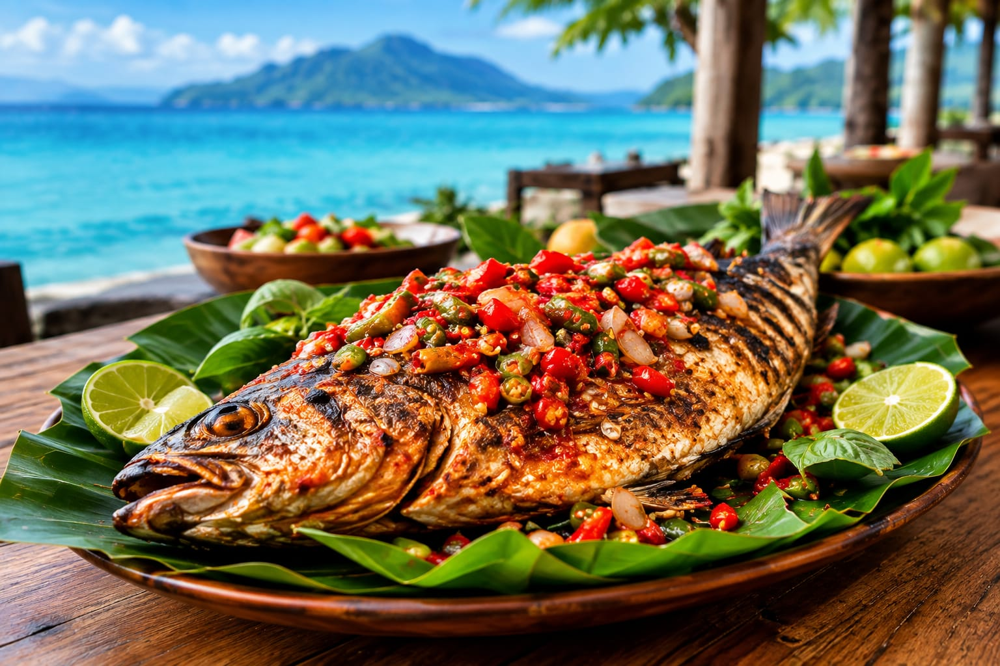

Profil Restoran

Tentang Kami
Restoran Rasa Maluku adalah restoran yang menyajikan berbagai masakan khas Maluku dengan cita rasa autentik dan bahan-bahan pilihan. Kami hadir untuk memperkenalkan kekayaan kuliner Maluku kepada masyarakat luas, dengan suasana yang nyaman dan pelayanan terbaik.
Visi
"Menjadi restoran pilihan utama untuk menikmati kuliner khas Maluku dengan cita rasa autentik dan kualitas terbaik."
Misi
- Melestarikan dan memperkenalkan kuliner khas Maluku.
- Memberikan pengalaman makan yang berkesan bagi setiap pelanggan.
- Mengutamakan kualitas bahan, rasa, dan pelayanan.